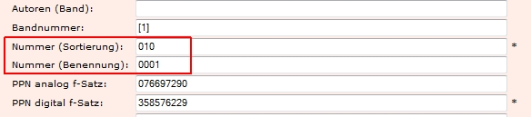

Einleitung
In diesem Dokument werden die Besonderheiten beim Anlegen von mehrbändigen Werken in Kitodo beschrieben und erläutert.
Es wird ein Anwendungsvorschlag vorgestellt, der für die meisten Fälle gültig sein sollte. Bei abweichenden Strukturen der mehrbändigen Werke muss eine individuelle Lösung gesucht werden.
Mehrbändige Werke in Kitodo
Bei der Bearbeitung mehrbändiger Werke in Kitodo.Production sind vor allem zwei Metadatenfelder wichtig:
- Nummer (Sortierung)
- Nummer (Benennung)
Diese Angaben müssen beim Anlegen des Vorgangs manuell eingegeben werden.

Nummer (Sortierung)
Dieses Feld ist notwendig, dass die Bände eines mehrbändigen Werks in der Präsentation in der richtigen Reihenfolge dargestellt werden.
Im einfachsten Falle kann dies mit 1, 2, 3, … realisiert werden. Man muss jedoch beachten, dass keine Bände im Nachhinein eingefügt werden können, da zweistellige Sortiernummern immer hiner einstelligen Sortiernummern einsortiert werden. Deshalb wird die letzte Stelle als Puffer mit 0 belegt. Dies sieht beispielweise so aus:
- 010
- 020
- 030
- …
- 100
- 110
- …
Diese Lösung bietet zwei Vorteile:
- zwischen jedem Band lassen sich neun Bände nachträglich einfügen.
- es lassen sich bis zu 99 Bände abbilden.
Nummer (Benennung)
Dieses Feld dient der Wiedererkennung der Bandstruktur in den Vorgangstiteln. Ohne diese Benennung müsste man die Metadaten oder Vorgangseigenschaften aufrufen, um die jeweilige Bandnummer zu ermitteln.
Dieses Feld wird in der SLUB vierstellig nach folgendem Schema vergeben:
- 0001
- 0002
- 0003
- …
Diese Nummern können geändert (wenn der Vorgang noch nicht abgeschlossen ist) und deren Stellenzahl erweitert werden, da dadurch die Sortierung nicht beeinflusst wird.
Anwendung
Nummer (Sortierung)
Je nach der Struktur des mehrbändigen Werkes muss ggf. die Sortierzählung angepasst werden.
In aller Regel ist folgende Sortierzählung anwendbar:
- 010
- 020
- 030
- …
- 100
- 110
- …
Hier könnten zwischen den Bänden durch die Puffer noch Nachträge eingefügt werden, ohne dass die Sortierung negativ beeinflußt wird.
Falls ein Band ohne Pufferstelle am Ende eingefügt wird (zwischen 01 und 02 zum Beispiel 015) werden die Bände mit wie hier drei Stellen in der Sortierzählung automatisch hinter die Bände mit zwei Stellen sortiert:
- 01
- 02
- 03
- 04
- 015
- 025
Diese Auswirkung der Stellenanzahl ist generell zu beachten! Das heißt, dass bei jeder Mehrbändigkeit im Vorfeld beachtet werden muss, wie die gesamte Struktur aussehen wird (hier müssen auch verschiedene Auflagen und gegebenenfalls weitere Ebenen beachtet werden). Jede Anpassung des Sortiercodes führt zu umfangreichen Nacharbeiten.
Der oben genannte Vorschlag sollte für die meisten mehrbändigen Werke ausreichen, die nur über eine Ebene verfügen und bis zu 99 Bände enthalten.
Sollten umfangreichere Mehrbändigkeiten auftreten, muss die Anzahl der Stellen erweitert werden. Am Besten ist es jedoch wohl in solchen Fällen, in Abstimmung mit Kollegen eine Lösung zu finden.
Nummer (Benennung)
Die Nummer (Benennung) kann in aller Regel mit folgender Benennung erfolgen:
- 0001
- 0002
- 0003
- 0004
Wenn Bände eingefügt werden, kann dies mit _X gekennzeichnet werden:
- 0001
- 0002
- 0002_2
- 0003
- 0003_2
- 0004